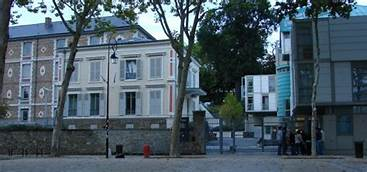
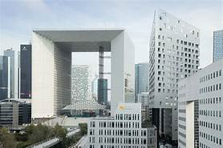
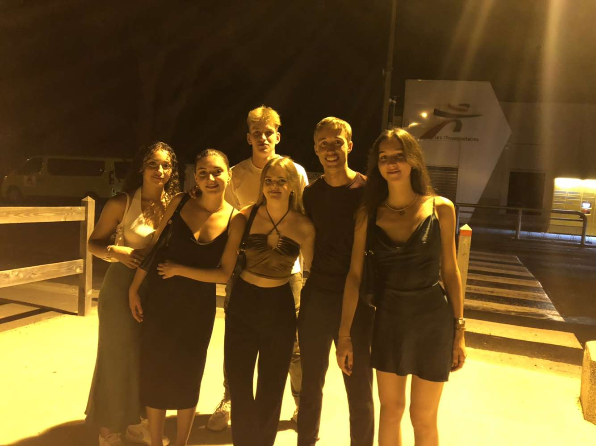
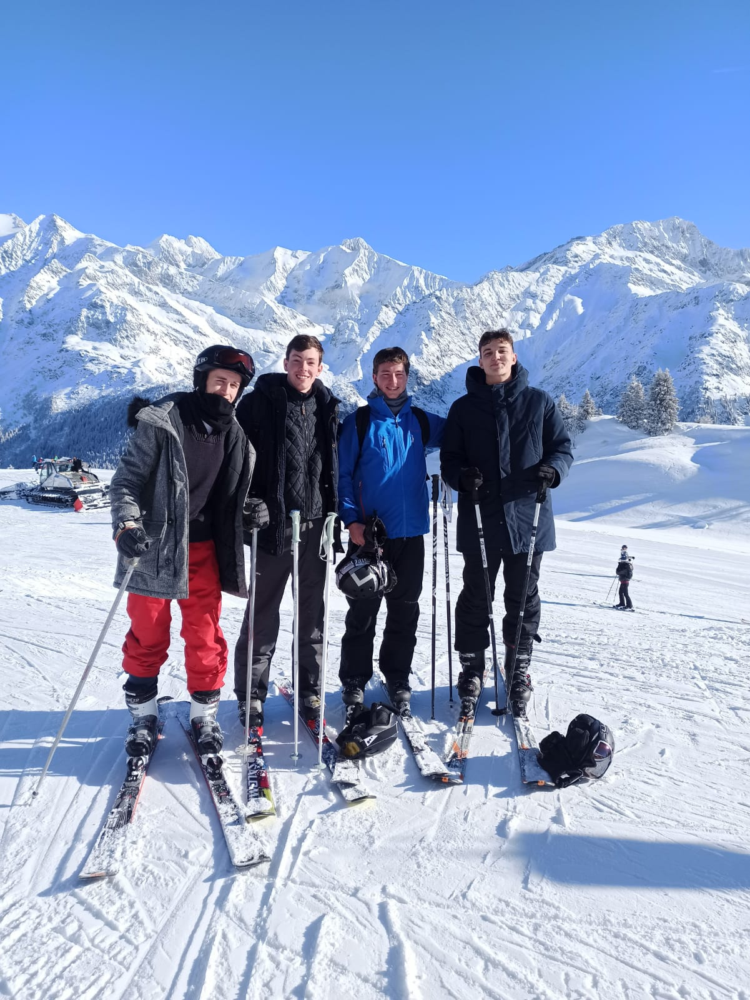

Je suis quelqu'un de passionné par les nouvelles technologies. C'est pourquoi j'ai codé mon profil sous forme de site. Je suis aussi passionné par les mathématiques et par le foot.
Mon LinkedInJ'habite à Chaville, dans les Hauts-de-Seine, mais j'ai effectué mes études primaires et secondaires dans les Yvelines. J'ai passé mon brevet au Collège Jean Racine à Viroflay.
Mon collège :
Après le collège, j'ai continué ma scolarité dans les Yvelines. J'ai passé mon bac spécialités Mathématiques et Physique-chimie au lycée La Bruyère à Versailles
Mon lycée :
J'ai ensuite rejoins l'IESEG School of Management sur le campus de Paris-La Défense où je suis actuellement en 1ère année.
Mon école :
Mes amis sont vraiment important pour moi, ils m'aident à avancer et à m'améliorer tous les jours. Dans ma vie, j'ai deux bandes d'amis très chères à mes yeux. Il y a tout d'abord les amis que je me suis fais pendant mon collège et mon lycée. Mais il y aussi les amis que j'ai rencontrés à l'IESEG avec lesquels je suis notamment partis au ski.
Mes meilleurs amis du lycée :
Mes meilleurs amis de l'IESEG :
Ma grande passion c'est le Football. En effet, je suis un grand fan du Paris Saint-Germain qui est un club que je suis depuis petit. En effet, j'allais régulièrement au stade, le Parc des Princes, avant le covid avec mon père ou mon grand-père.